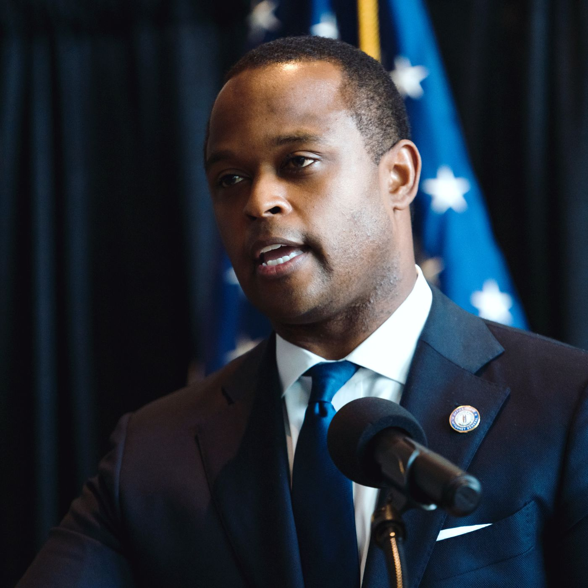

| Her Life | Her Death | Her Case | Grand Jury | How You Can Help | Contact Us |
|---|
 The man person to know regarding Ms. Taylor’s grand jury proceedings is Daniel Cameron. He is the Kentucky Attorney General that has been presiding over this case since its inception. The usa.gov website defines an attorneys general’s office as one that are the top legal officers in their state or territory, they act as the “People’s Lawyer” for citizens (usa.gov). According to Cornell Law, a grand jury exists to, “determin[e] if there is probable cause if a criminal offense has been committed” (Cornell). They are held in private and are an investigative body that acts independently of the prosecuting attorney and the judge.
On a press conference that Daniel Cameron held himself after the grand jury proceedings (a clip is attached below), he announced that the only charges brought about by the grand jury proceedings was three counts of wanton endangerment. No one was injured in the apartment (CBS). Kentucky statutes define wanton endangerment as the following:
Two anonymous grand jurors have come forward to ask that grand jury proceedings be made public (they have been at this point), after they were outraged by the Attorney General’s speech. The cited two main points; incomplete evidence, and no possible indictments for manslaughter or similar charges.
In a Vice News interview, one of the jurors stated that he was worried about a cover up. Since the public integrity unit was internal to the police force, they likely had a vested interest in not prosecuting their colleagues. They stated the public integrity unit was “throwing [the officers] softball questions,” implying the internal investigation did not do enough to interrogate their own officers (Vice). Additionally, the anonymous jurors were told questionable conduct would be discussed later but that never came to fruition, leaving “holes in their stories” (Vice). Additionally, At least one bullet that goes through Breonna Taylor’s roof and up through the roof of the apartment above her that was never recovered.
Some interviews, including the public integrity unit’s interview with the chief of police at the time, the jurors do not recall hearing while in the jury room, “selected evidence was not presented” (Vice). Additionally, one juror stated that he found Kenneth Walker more credible than any of the officers, whose stories did not line up. Kenneth Walker’s story goes directly against that of the officers.
During a news conference about the grand jury proceedings, Daniel Cameron stated, “While there are six possible homicide charges under Kentucky law, these charges are not applicable to the facts before us because our investigation showed, and the grand jury agreed that Mattingly and Cosgrove were justified in their return in deadly fire” (CBS). When interviewed by CBS, the jurors stated that the first time they had heard of those six possible murder charges was during the press conference. The jury had not been made aware of these possible charges and therefore did not consider them.
During an interview with CBS News, the unnamed jurors’ attorney Kevin Glogower states that normally grand jurors are presented with the law and charges to then decide which charges are applicable based on facts presented. He said “it looked like they weren’t following the grand jurors and only wanted the grand jurors to follow them” (CBS). In an interview with Vice the anonymous jurors stated, “We weren’t made aware of any additional charges we could consider and when we asked, they just said that they wouldn’t apply” (Vice).
As mentioned in the “Her Case” page under the header “Did the officers announce themselves before entering Breonna Taylor’s place of residence,” Neighbors interviewed by CNN stated they were awoken by gunfire and did not hear what proceeded it. There was one neighbor who, when interviewed in March, stated that they did not hear police announcing themselves. However, when interviewed again in May, he stated he remembered the officer’s saying, “this is the cops.” Despite this contradicting testimony from their previous statement, in addition to being the only non-police witness who stated hearing anything.
This either points out that if the officer’s intent was just to injure Ms. Taylor, they failed at doing so, but only once, or the officer’s intent was to kill Ms. Taylor, they were only able to successfully shoot a fatal wound once. There were 32 rounds shot into the apartment.
The simple invoking of the word “our” in this instance suggests it was not independent. The police have a vested interest in not having the officers charged with manslaughter. The attorney general appears to have a strong hand in the way these proceedings were handled and interest aligned with the police officers. Cameron stated in an interview with ABC affiliate WBKO, “It is not our judgement that there should be other charges that the grand jury should be advised of” (ABC).
| Her Life | Her Death | Her Case | Grand Jury | How You Can Help | Contact Us |
|---|